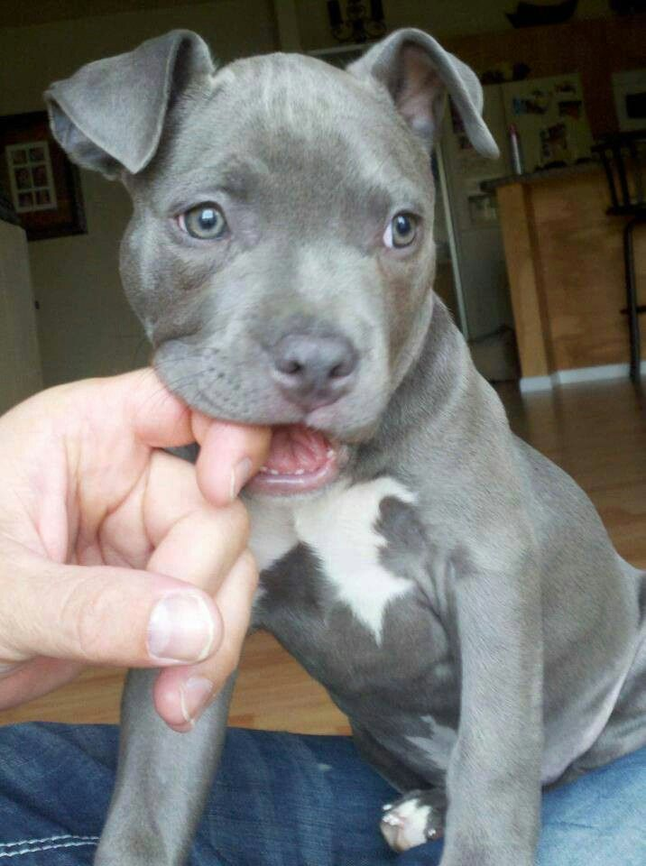

Motivation
Pit bulls have a historically poor reputation as an aggressive breed. They’re most commonly used in dog fighting, and are often not permitted as pets in many leasing communities. Because of their poor reputation, thousands of pitbulls are euthanized in kill shelters each year. Supporters of the breed have championed these dogs as sweet and loving in nature, and in recent years have been pushing to change the negative stigma that surrounds them. Below are some resources that dive into these topics, from both organizations and individuals:
The purpose of this project was to use quantitative data to assess whether pitbulls are more aggressive than other breeds. By using reporting of dog bites as a surrogate measure of aggression, can we see whether pit bulls are more aggressive than other breeds, and whether this has changed over time?
A screencast of our project can be found here. A more fun version of this screencast can be found here - with music! Please enjoy both.
Data
We used data publicly available on NYC Open Data. More detailed information on the datasets used can be found in the Data tab. A Google Drive folder of the datasets can be found here.
Research questions
- Are there more bites by pitbulls than other breeds? Does this number vary by borough?
- Are there more pitbulls in certain neighborhoods? How does this compare to the number of bites seen in each borough?
- What is the relationship between dog breed, spay/neuter status, and dog bites?
- Can we identify any trends in dog bite reports over time? Does season / weather affect the number of dog bites?
Main results
- Pit bulls don’t bite more than all other breeds combined, but they make up for about a third of all bites - a significant number for a single breed. This number varies only slightly by borough, with a range of 264 bites (~90 pit bull) in Staten Island, and 664 bites (~230 pit bull) in Queens.
- Manhattan has the largest number of licensed dogs - unsurprising given its human population. The most licensed pit bulls live in Brooklyn.
- Pit bulls account for 5.5% of all registered dogs in NYC, but they account for over 30% of all dog bites.
- Males bite more often than females. Spayed/neutered dogs bite more, but this trend flips for pitbulls - non-spayed/neutered pit bulls bite more often.
- Dog bite occurrence/reporting increases over time (2015-2018) across all breeds, but this trend is almost negligible for pit bulls specifically. Trends are different across boroughs. Season affects the number of dog bites, with a higher frequency occurring in the summer months.
Discussion
Quantifying dog aggression with individual-reported dog bite data in NYC provides insights into trends across breeds, locations, and over time. It was interesting to note that pit bulls account for such a high percentage of reported dog bites, especially since they make up such a small proportion of all registered dogs. It begs the question: why? Is this because pit bulls bite people more often, or is it a matter of people being more inclined to report bites by pit bulls versus other breeds? Unfortunately, this is something we can’t answer.
Still, we found that pit bull bites increased over time at a much lower rate - almost not at all- compared to bites from other breeds. If this is a facet of reporting, then it may be that efforts to change the stigma surrounding pit bulls is working, and people are reporting such bites less often.
The limitations of this dataset make inference difficult. The opt-in data collection makes for potentially biased data. For example, dog sex was largely unknown, calling into question the meaningfulness of our conclusions regarding the associations between dog bites and gender. Despite this, we think our findings are interesting, and at the very least prompt further investigation regarding pit bull behavior and stigma.